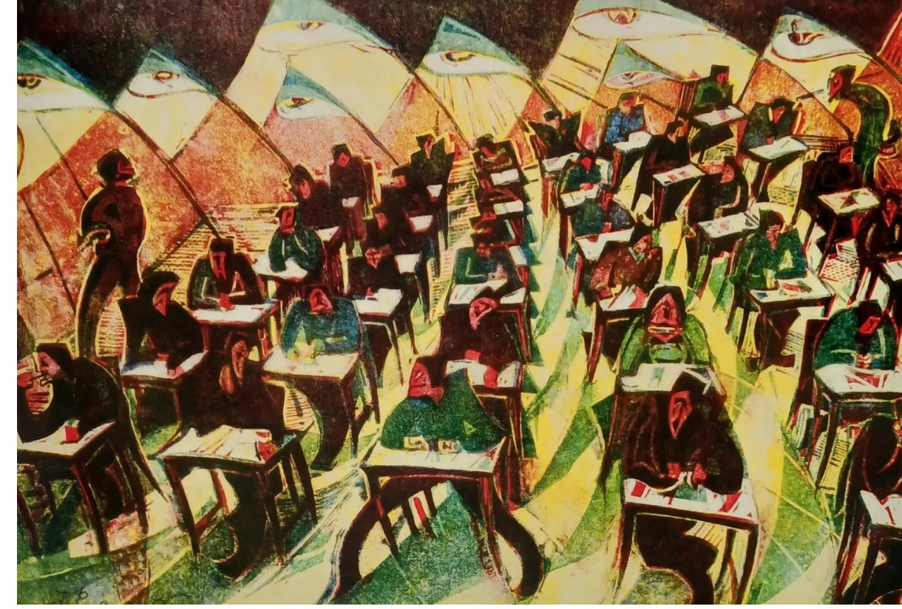
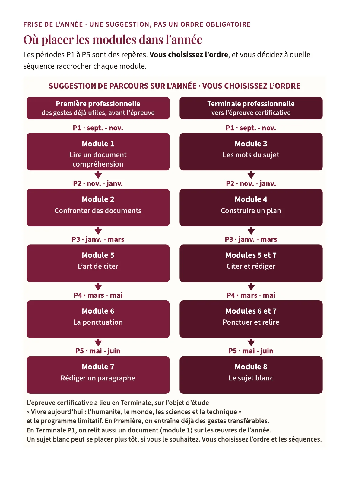

Lettres · Première et Terminale · Baccalauréat professionnel
Préparer l’écrit du bac professionnel
Une heure peut être comptée, remplie, subie, attendue ou choisie. Le travail est désormais organisé en modules indépendants, à répartir sur la Première et la Terminale, pour apprendre à lire un corpus et à construire un écrit argumentatif, en rendant la réponse plus précise à chaque retour au sujet.
Sous-épreuve de français du baccalauréat professionnel, écrit ponctuel de 3 heures, coefficient 2,5. Ces modules préparent les deux parties de l’épreuve : les compétences de lecture, puis l’écrit argumentatif. Elle porte sur l’objet d’étude de Terminale « Vivre aujourd’hui : l’humanité, le monde, les sciences et la technique » et sur le programme limitatif « Rythmes et cadences de la vie moderne : quel temps pour soi ? », valable pour les sessions 2025, 2026 et 2027. Le fil littéraire développé est Courir de Jean Echenoz ; les outils se transfèrent à chacune des six œuvres du programme.

Présentation
Le matériau est désormais organisé en modules, d’une durée de 55 minutes, prévus sur 52 minutes de travail, avec trois minutes de marge matérielle. En Terminale, ils mènent à un sujet blanc de trois heures, distinct des modules. Nous ne chercherons pas une formule qui pense à notre place : nous apprendrons à éprouver une première impression, à lire les mots du sujet, à organiser une réponse, puis à l’écrire.
La démarche est la même que pour l’écrit du lycée général et technologique, adaptée à cette épreuve : spirale de Gorse, analyse des mots du sujet, adverbes pris comme indices, plan thématique par raisons ou par aspects (un plan en « pourquoi » ou en « comment »), retour à l’objet d’étude avant de fermer le plan, puis rédaction. Ce n’est pas une dissertation, un essai ou une contraction : le texte officiel demande un écrit argumentatif. On n’emploie pas le plan thèse, antithèse, synthèse.
Ces modules s’adressent aux élèves de lycée professionnel, sous statut scolaire et en CFA, principalement en Première et en Terminale. Elle ne prépare pas l’épreuve anticipée de français de Première du lycée général et technologique, déjà traitée dans Dissertation et essai.
L’épreuve préparée
Les faits suivants sont ceux de l’arrêté du 17 juin 2020, NOR MENE2015195A, publié au Bulletin officiel n° 30 du 23 juillet 2020, annexe I, « Définition de la sous-épreuve de français au baccalauréat professionnel ». Cette définition reste celle à suivre.
- La sous-épreuve de français a le coefficient 2,5. L’épreuve plus large de français, histoire-géographie et enseignement moral et civique a le coefficient 5 et comporte deux sous-épreuves ; ce coefficient 5 ne s’applique pas au français seul.
- La forme ponctuelle est un écrit de trois heures, noté sur 20, à la fin de Terminale. Elle concerne notamment les élèves sous statut scolaire et les apprentis : l’apprentissage ne signifie pas automatiquement un contrôle en cours de formation en français.
- Pour le contrôle en cours de formation, dans la formation professionnelle continue d’un établissement public habilité à pratiquer le CCF intégral, l’annexe I précise : « Le contrôle en cours de formation comporte deux situations d’évaluation, d’une durée maximale de trois heures, qui évaluent des compétences terminales de lecture et d’écriture. » Nous conservons cette formulation, sans décider à sa place si les trois heures s’entendent par situation ou pour leur ensemble.
- Pour les connaissances, l’épreuve porte sur l’objet d’étude de Terminale et sur le programme limitatif, non sur une addition des objets d’étude de Seconde et de Première.
Le texte prescrit : « A partir d’un corpus constitué d’un ou plusieurs textes et éventuellement d’images, et qui permet une réflexion sur le thème du programme limitatif, le candidat est invité à répondre à des questions de compréhension et d’interprétation, puis à produire un écrit argumentatif répondant à une consigne formulée dans le sujet. » L’orthographe « A partir » est celle du texte officiel.
Deux parties, deux exigences liées
- Compétences de lecture, 10 points : « Le candidat répond à des questions qui cheminent de la compréhension et de l’interprétation vers la confrontation des différents éléments du corpus. » Il faut répondre dans l’ordre des questions et confronter lorsque le sujet le demande.
- Compétences d’écriture, 10 points : « Le candidat produit, en lien avec le sujet donné, un écrit argumentatif d’une quarantaine de lignes au moins qui mobilise le corpus et les connaissances acquises durant l’année, qu’il peut enrichir de sa culture personnelle. » Le nombre de mots ne remplace pas cette consigne ; les lignes dépendent de l’écriture et du support.
La grille nationale de l’évaluation ponctuelle, dans la note de service du 25 novembre 2021, NOR MENE2135369N, Bulletin officiel n° 47 du 16 décembre 2021, répartit les 10 points d’écriture ainsi : argumentation, 4 points ; lecture et connaissances, 3 points ; expression, 3 points. Pour la lecture, le barème est précisé dans le sujet. Nous reprenons cette répartition, sans en fabriquer une autre.
Les exigences de 2027 sur la maîtrise de la langue, publiées au Bulletin officiel, demandent de valoriser la clarté, la compréhensibilité, l’orthographe, la syntaxe et la précision du propos, en tenant compte des aménagements. Elles n’ont pas remplacé, pour cette sous-épreuve, le partage lecture 10 points et écriture 10 points, ni le détail 4, 3 et 3 de la grille nationale. On suit le barème national de la session lorsqu’il est communiqué.
Quatre compétences du programme, cinq objectifs de l’épreuve
Ces deux listes ne se confondent pas. La première appartient au programme d’enseignement. La seconde appartient à la définition de la sous-épreuve. L’une n’est pas une autre version de l’autre.
Quatre compétences du programme
Formulation de l’annexe publiée du programme de Seconde, reprise dans l’annexe de Première (arrêté du 3 avril 2019, puis arrêté du 3 février 2020) :
- maîtriser l’échange oral : écouter, réagir, s’exprimer dans diverses situations de communication ;
- maîtriser l’échange écrit : lire, analyser, écrire et adapter son expression écrite selon les situations et les destinataires ;
- devenir un lecteur compétent et critique, adapter sa lecture à la diversité des textes ;
- confronter des connaissances et des expériences pour se construire.
Cinq objectifs de la sous-épreuve
Liste propre à l’annexe I de l’arrêté du 17 juin 2020. L’orthographe officielle de « maitriser » dans le troisième objectif est conservée :
- maîtriser l’échange écrit : lire, analyser, écrire ;
- adapter son expression écrite selon les situations et les destinataires ;
- maitriser la lecture et exercer son esprit critique ;
- adapter sa lecture à la diversité des textes ;
- mettre en perspective des connaissances et des expériences.
L’oral utilisé dans nos séances prépare la pensée écrite. Il n’ajoute pas de partie orale à cette sous-épreuve.
Le programme limitatif
Le thème est « Rythmes et cadences de la vie moderne : quel temps pour soi ? ». La note de service du 31 janvier 2024, NOR MENE2402853N, Bulletin officiel n° 8 du 22 février 2024, couvre les années scolaires 2024-2025, 2025-2026 et 2026-2027. Éduscol identifie les sessions 2025, 2026 et 2027. Le professeur choisit une œuvre parmi les six suivantes. Les dates sont celles de la note officielle.
- Récits. Leïla Slimani, Le parfum des fleurs la nuit (2021) ; Jean Echenoz, Courir (2008) ; Boris Vian, L’Écume des jours (1946).
- Poésie. Thierry Metz, Le journal d’un manœuvre (2017) ; James Sacré, Figures qui bougent un peu (1978).
- Théâtre. Marguerite Duras, Le Square (version théâtrale) (1965).
Le fil suivi développe Courir. Si une autre œuvre a été choisie, la fiche de transfert permet de remplacer les appuis, sans exiger un second livre non étudié.
La spirale de Gorse
La spirale de Gorse commence par une impression et revient aux mots pour la mettre à l’épreuve. Ses cinq étapes sont, dans cet ordre :
- Je remarque. L’impression, ou le premier mot du sujet qui arrête.
- Je repère. Les indices dans les documents, ou les termes et les restrictions de la question.
- Je comprends. Le sens et les effets, ou ce qu’il faut expliquer, discuter ou distinguer.
- J’anticipe. Les relations entre documents, ou des raisons ordonnées et leurs appuis.
- Je trouve le sens. Une réponse justifiée, devenue précise, à la pointe de la spirale.

Le dessin n’est pas une cible. Il se termine par une pointe, non par un centre. À chaque tour, l’idée extérieure rejoint un appui intérieur. On peut revenir en arrière si l’appui contredit l’idée. Les séances 1 à 3 font progresser la lecture du corpus. Les séances 4 à 7 reprennent la même démarche sur le sujet d’écriture. La séance 8 rassemble les acquis : la pointe n’est pas un slogan, c’est une réponse précise au sujet.
Les huit modules, un geste chacun
Chaque geste ci-dessous correspond à un module téléchargeable plus bas. Chaque module s’utilise seul et se raccroche à la séquence que vous choisissez.
Chaque séance dure 52 minutes de travail, avec un rituel d’entrée et un rituel de sortie, un atelier de langue, une trace écrite, des cartes de révision et un devoir court. Un parcours accompagné et un approfondissement sont prévus.
| Séance | Question de travail | Avancée dans la spirale de Gorse |
|---|---|---|
| 1 | Une impression suffit-elle à comprendre ? | Je remarque, puis je vérifie un premier appui |
| 2 | Comment un détail devient-il une interprétation ? | Je repère et Je comprends |
| 3 | Des documents sur le temps disent-ils la même chose ? | J’anticipe et Je trouve le sens du corpus |
| 4 | Quel mot empêche de répondre à côté ? | Je remarque et Je repère dans le sujet |
| 5 | Comment organiser sans se contredire ? | Je comprends et J’anticipe un plan |
| 6 | Qu’est-ce qui transforme un exemple en argument ? | Je trouve le sens d’un paragraphe |
| 7 | Comment conduire le lecteur jusqu’à la réponse ? | Retour resserré sur toute la démarche |
| 8 | Que faut-il revoir pour être compris ? | Vérification à la pointe et transfert |
Le corpus d’entraînement réunit des textes du domaine public, vérifiés sur Wikisource : Baudelaire, « L’Horloge », dans Les Fleurs du mal, édition de 1861 ; Rousseau, Cinquième Promenade des Rêveries du promeneur solitaire, édition de 1782 ; et, pour le sujet blanc, Baudelaire, « Enivrez-vous ». Une image complète le corpus. Les œuvres protégées du programme ne sont pas reproduites : on s’appuie sur les exemplaires de la classe.
Le sujet suivi des séances 4 à 7 est : « Pourquoi avons-nous besoin de rythmes choisis pour disposer de temps à soi dans la vie moderne ? » D’autres formulations entraînent à lire les restrictions : « Comment peut-on préserver du temps à soi dans une vie soumise à des rythmes collectifs ? » ; « Le temps pour soi se trouve-t-il seulement en dehors des obligations ? » ; « Ralentir permet-il toujours de mieux vivre son temps ? »
Lire le sujet, construire le plan, écrire
Trois outils pédagogiques, qui ne sont pas des termes réglementaires, organisent le travail d’écriture.
- Le mot-gouvernail. Le mot qui oriente la question. Un adverbe comme « toujours », « seulement » ou « vraiment » est un indice : il empêche une réponse trop large. On le met à l’épreuve, on ne l’efface pas.
- Le double ancrage. Avant de fermer le plan, on resitue la question dans l’objet d’étude « Vivre aujourd’hui : l’humanité, le monde, les sciences et la technique » et dans le programme limitatif. Cette étape évite de traiter un sujet abstrait, détaché de ce qui a été étudié.
- Le fil de réponse. Chaque partie développe la même demande, par raisons ou par aspects. Un sujet en « pourquoi » cherche des raisons ; un sujet en « comment » cherche des moyens et leurs conditions. On n’écrit pas un plan thèse, antithèse, synthèse.
Le paragraphe d’argumentation a quatre moments : une idée qui répond au sujet, un exemple précis, une analyse de cet exemple, un lien qui revient à la question. Une référence n’est ni un nom posé ni un résumé : elle devient utile lorsque le lecteur comprend son rôle.
L’art de citer
La séance 6 et les outils de méthode y consacrent un travail suivi. Une citation sert l’argument ; elle ne le remplace pas.
- Elle est courte, exacte, et placée entre guillemets.
- Elle entre dans la phrase, avec sa ponctuation : « Le verbe “dévore” représente… »
- Elle est référencée : document, auteur, emplacement dans le corpus ou dans l’œuvre de l’année.
- Elle est analysée. Une citation seule, même pertinente, ne suffit pas. On dit ce qu’elle fait comprendre et son lien avec le sujet.
- On emploie « suggère » ou « fait percevoir » plutôt qu’une affirmation psychologique sur l’auteur.
- On ne cite pas de mémoire un texte protégé : on revient à l’exemplaire de la classe. Les textes protégés d’un sujet officiel ne sont pas reproduits dans nos documents.
La ponctuation
La séance 7, la séance 8 et les outils de méthode y consacrent un travail suivi. L’annexe I prévoit que l’évaluation prend en compte « les normes orthographiques, grammaticales, typographiques et lexicales ». La ponctuation sert l’intelligibilité, donc aussi la note d’expression.
- On relit deux fois : une première fois pour le sujet, une seconde pour les accords et la ponctuation.
- Un connecteur a besoin de sa ponctuation. Avant « cependant », un point ou un point-virgule convient souvent ; une virgule seule peut coller deux phrases qui devraient se succéder clairement.
- La citation s’insère dans la phrase, avec les guillemets et, s’il le faut, une majuscule ou une minuscule selon qu’elle est intégrée ou autonome.
- La présentation de la copie (alinéas, marges, lisibilité) fait partie de cette exigence : une copie dont la lecture serait jugée incompréhensible s’expose, dans le cadre des notes de service sur les corrections, à une note inférieure à la moyenne, sous réserve des aménagements accordés.
Les évaluations
- Évaluation diagnostique, en séance 1, treize minutes : elle indique les gestes à apprendre, elle ne prédit pas la note du bac.
- Évaluation intermédiaire, en séance 5 : un plan raisonné, deux ou trois parties selon sa nécessité, avec le double ancrage.
- Sujet blanc de trois heures, après la séance 8. C’est un entraînement original, non un sujet officiel. Il en reprend la forme : corpus, questions de lecture sur 10 points, écrit argumentatif sur 10 points, une quarantaine de lignes au moins. La forme de référence est celle du sujet officiel de français du baccalauréat professionnel, session 2026, épreuve du 28 mai 2026. Les textes protégés de ce sujet officiel ne sont pas reproduits. Le sujet blanc s’appuie sur Rousseau et sur « Enivrez-vous », textes du domaine public.
- Corrigés, copies modèles commentées, grille nationale reprise localement, grille d’auto-évaluation. Les copies modèles sont des exemples à transformer, non des textes à apprendre par cœur. La notation du professeur suit la grille nationale (argumentation 4, lecture et connaissances 3, expression 3) et le barème de lecture proposé pour ce sujet d’entraînement.
Un parcours autonome permet de reprendre après une absence. Une version adaptée, aux textes plus courts et aux consignes pas à pas, accompagne les élèves qui en ont besoin, y compris dans le cadre d’un aménagement.
Téléchargements
Ces modules se répartissent sur la Première et la Terminale. Les périodes P1 à P5 de la frise sont une suggestion : vous choisissez l’ordre, et vous décidez à quelle séquence raccrocher chaque module. Chaque fichier est proposé en PDF, Word et LibreOffice. Vous pouvez utiliser et adapter ces documents en citant leur autrice, sans usage commercial, et en partageant vos versions dans les mêmes conditions. CC BY-NC-SA 4.0.
Sous chaque module, une flèche et un surlignage jaune indiquent des séquences de lettres du lycée professionnel, déjà en ligne, auxquelles vous pouvez le raccrocher. Ce sont des suggestions : vos propres séquences conviennent aussi, y compris sur une œuvre du programme limitatif.

-
Guide de l’année
PDF Word (.docx) LibreOffice (.odt)Mangez-le si vous voulez, Terminale, objet d’étude « Vivre aujourd’hui ». Victor Hugo et la justice, Première. Rendre compte d’une PFMP, option motocycles, Terminale.
-
Module 1. Lire un document
PDF Word (.docx) LibreOffice (.odt)Mangez-le si vous voulez, Terminale, objet d’étude « Vivre aujourd’hui ». Victor Hugo et la justice, Première.
-
Module 2. Confronter des documents
PDF Word (.docx) LibreOffice (.odt)Mangez-le si vous voulez, Terminale, objet d’étude « Vivre aujourd’hui ». Victor Hugo et la justice, Première.
-
Module 3. Lire les mots du sujet
PDF Word (.docx) LibreOffice (.odt)Mangez-le si vous voulez, Terminale, objet d’étude « Vivre aujourd’hui ». Victor Hugo et la justice, Première.
-
Module 4. Construire un plan
PDF Word (.docx) LibreOffice (.odt)Mangez-le si vous voulez, Terminale, objet d’étude « Vivre aujourd’hui ». Victor Hugo et la justice, Première. Rendre compte d’une PFMP, option motocycles, Terminale.
-
Module 5. L’art de citer
PDF Word (.docx) LibreOffice (.odt)Mangez-le si vous voulez, Terminale, objet d’étude « Vivre aujourd’hui ». Victor Hugo et la justice, Première.
-
Module 6. La ponctuation
PDF Word (.docx) LibreOffice (.odt)Mangez-le si vous voulez, Terminale, objet d’étude « Vivre aujourd’hui ». Victor Hugo et la justice, Première. Rendre compte d’une PFMP, option motocycles, Terminale.
-
Module 7. Rédiger et relire
PDF Word (.docx) LibreOffice (.odt)Mangez-le si vous voulez, Terminale, objet d’étude « Vivre aujourd’hui ». Victor Hugo et la justice, Première. Rendre compte d’une PFMP, option motocycles, Terminale.
-
Module 8. Le sujet blanc
PDF Word (.docx) LibreOffice (.odt)Mangez-le si vous voulez, Terminale, objet d’étude « Vivre aujourd’hui ».
-
Fiche professeur, montage de l’année
PDF Word (.docx) LibreOffice (.odt)Mangez-le si vous voulez, Terminale, objet d’étude « Vivre aujourd’hui ». Victor Hugo et la justice, Première. Rendre compte d’une PFMP, option motocycles, Terminale.
Textes officiels cités
- Arrêté du 17 juin 2020, NOR MENE2015195A, Bulletin officiel n° 30 du 23 juillet 2020, annexe I. BO, texte intégral sur Légifrance.
- Note de service du 31 janvier 2024, NOR MENE2402853N, Bulletin officiel n° 8 du 22 février 2024, programme limitatif de Terminale, années scolaires 2024-2025 à 2026-2027. BO.
- Note de service du 25 novembre 2021, NOR MENE2135369N, Bulletin officiel n° 47 du 16 décembre 2021, supports d’évaluation et de notation, grille nationale. BO.
- Sujet officiel de français du baccalauréat professionnel, session 2026, épreuve du 28 mai 2026, cité pour la forme de l’épreuve, sans reproduction de ses textes protégés. Sujet, éducation.gouv.fr.
Madame Carole Paoli Pompougnac
Cyril Power, The Exam Room, 1934, linogravure en couleurs. Grosvenor School of Modern Art. L’artiste est mort en 1951 ; l’œuvre est dans le domaine public en France. Schéma de la spirale de Gorse : illustration originale, conçue par Madame Carole Paoli Pompougnac.
Retour à la méthodologie · Préparer aux examens, français · Retour aux lettres